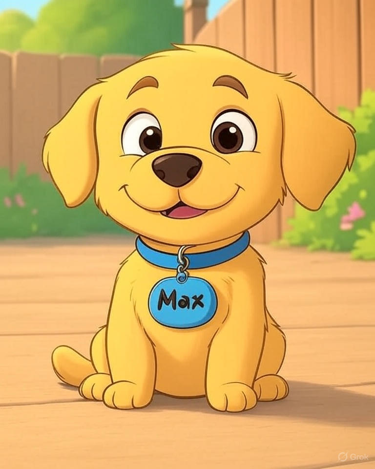

Once upon a time, in a little town, there was a puppy named Max. Max was a fluffy golden retriever with big, shiny eyes.
One sunny day, Max wanted to explore. He wagged his tail and ran out of his yard!
Max saw fun things! He chased butterflies, sniffed flowers, and met a nice cat named Whiskers.
But soon, Max was far from home. He felt scared!
Then, a kind girl named Lily saw Max. She said, “Don’t worry, little puppy! I’ll help you get home.” Max wagged his tail happily.

Lily looked at Max’s collar. It had his owner’s phone number! She called, and soon, Max’s owner ran over. “Max! There you are!” he said.
Max jumped into his owner’s arms and barked with joy. Lily smiled and waved goodbye.

From that day, Max stayed close to home. But he never forgot his friend, Lily!